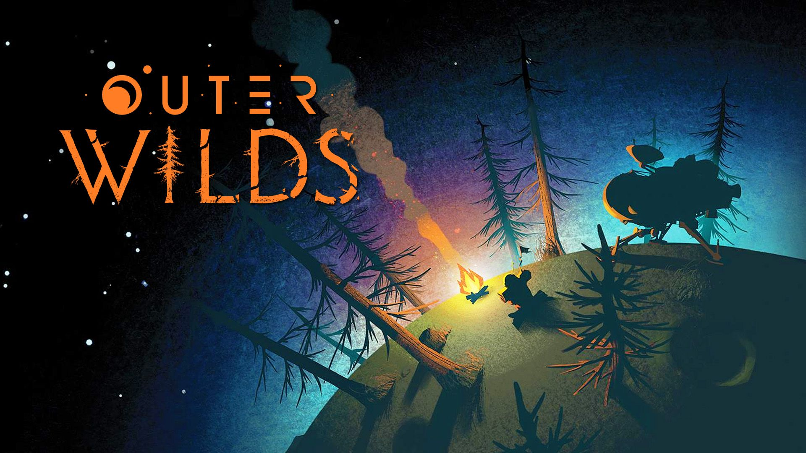
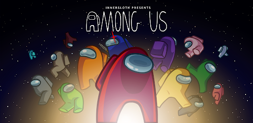
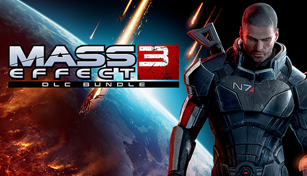
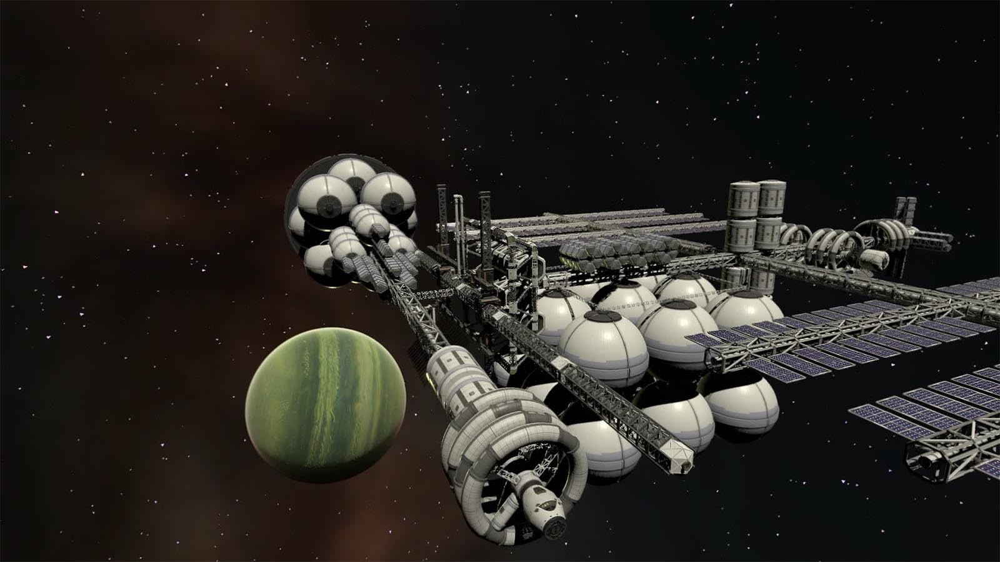
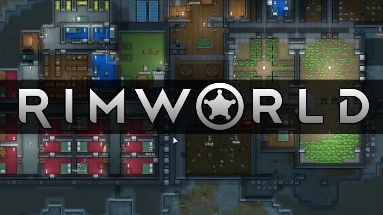

Les extras
Le jeu-vidéo est un média extrêmement diversifié, et nous avons pu parler que d’un nombre très limité de jeux dans ces trois articles. C’est pourquoi voici quelques titres que nous n’avons pas pu caler, mais que nous souhaitions tout de même vous faire partager !
Dans Outer Wilds, vous incarnez un explorateur spatial à la recherche de la civilisation perdue des Nomaï. Vous devez explorer un système solaire afin d’en apprendre davantage sur ce peuple. Seulement, vous êtes bloqué dans une boucle temporelle, où l’étoile du système, une géante rouge, explose inévitablement en supernova au bout de 22 min. A chaque nouvelle boucle, vous devrez en apprendre plus sur cette fameuse civilisation perdue en utilisant ce que vous avez appris lors des boucles précédentes, et ainsi peut être élucider le mystère de Nomaï. Un jeu à la direction artistique marqué, rempli de poésie, de beauté et d’aventure.
A moins d’avoir vécu dans une grotte ces deux dernières années, difficile d’être passé à côté d’Among Us, le grand succès de la fin 2020. Dans ce jeu multijoueur inspiré du jeu du Loup-Garou, vous incarnez l’équipage d’un vaisseau contenant des imposteurs. Le but de l’équipage est de gérer le vaisseau et démasquer les imposteurs, et celui des imposteurs d’être les derniers en vie en éliminant le reste de l’équipage. Ce jeu fortement popularisé par des streamers vous garantit de bons fous-rires entre amis.
La trilogie Mass Effect fait également partie des grands noms du jeu-vidéo prenant place dans l’espace. Cette série mélangeant action, RPG et jeu de tir dans un univers de science-fiction nous raconte les aventures du commandant Shepard, capitaine du Normandy, devant combattre les Moissoneurs, une race extraterrestre représentant une menace de destruction imminente pour toutes les espèces de la galaxie. Ce jeu fut acclamé par la critique, notamment pour son scénario, son univers réaliste et ses personnages marquants.
Dans KSP, vous êtes à la tête de votre propre agence spatiale, afin d’explorer l’espace et le système solaire. Vous êtes sur la planète Kerbin, similaire à la Terre, où vous concevez vos fusées et vaisseaux spatiaux de A à Z afin de faire partir vos Kerbins (habitants de cette planète) la conquête des cieux et des astres. Cependant, ce ne sera pas une tâche simple, car ce jeu est une simulation et un sandbox très connu pour son réalisme hors-pair, donnant lieu à quelques feux d’artifices non-planifiés, mais qui est très gratifiant une fois qu’on le maîtrise.
RimWorld est un jeu de gestion, ou vous incarnez un groupe de colons cherchant à coloniser une planète après s’y être crashé. Vous allez donc devoir vous développer tout en devant faire face à différents aléas, allant de la catastrophe naturelle à l’attaque de pirates en passant par la maladie et les disputes entre les membres de la colonie. Ce qui marque vraiment dans Rimworld, c’est son réalisme très poussé dans les mécaniques de gestion, allant même jusqu’à la différentiation des organes. L’ambiance du jeu, mi-western mi-SF est aussi originale qu’efficace. Ce jeu est beaucoup moins connu que ceux dont nous avons parlé plus tôt, mais comme c’est notre pépite on a souhaité vous le partager !
Merci beaucoup d'avoir lu ce dossier jusqu'à la fin, nous espérons de tout coeur qu'il vous ait plu et que nous vous ayons donné envie de jouer à au moins un de ces jeux. A défaut, nous espérons que vous avez passé un agréable moment à le lire
Cet article a été rédigé par Titouan barabotti, Baptiste Goudet et Mattéo Gosselin